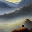

Auction: Nov. 6th, 2026
Edition: 1/1 · Standard: ERC-721 · Released on SuperRare. Image: PNG, 1,344 × 1,344 pixels (about 4.3 MB); 1,764 panels at 32 × 32 pixels each.
Searching... is composed of 42 × 42 = 1,764 individual images. Each image seems to depict a search in a vast landscape. Many contain a person on a misty mountain at dawn.
Generating and surveying outputs seemed to hold some other meaning. The depictions themselves, en masse, felt familiar. Searching a vast landscape for something that will seem obvious once we find it. We but never find it, at least we never feel like we've found it, and perhaps we won’t ever. Yet somehow we are drawn to this process by an unenviable impulse to keep going.
Overview
These images were generated from an algorithm defined in the artwork Redemption of Sisyphus by Yigit Duman.
Redemption challenges us to search for a hidden image. This image currently stored as a hash stored on Ethereum. No one knows what the actual image looks like. Perhaps not even Yigit Duman.
But Redemption offers potential discovery. If the image is found, it can be exactly matched to this hash. By following the instructions left on Redemption's metadata, we can search for it.
To do so, we draw from 4,294,967,295 possible seed values. Only one of these numbers is correct. Only one gives us precisely the right image, one point in a vast landscape of integers.
While searching, sampling from these billions of seeds, we create many of these alluring images. But all do not match, all except one.
Yigit Duman used this prompt for Redemption:
a man stands on a misty mountain at dawn,
a stone rolling down the hill.
oil painting style, soft brushstrokes,
muted tones, romantic landscape.
This prompt generates an image with a seed. For example, seed 118517663:
Stable Diffusion · 512 × 512

Downsampled · 32 × 32
Testing each possible seed can take a minute or more on some computers. The consequence is one person using one machine to search may take over a thousand years to find Redemption of Sisyphus.
I became transfixed by Redemption. I conducted this search. I generated thousands of images with a set of seeds I thought might have hidden meaning for Yigit such as hash values of Yigit’s contract, hashes and other values of his past works, echoes of translated or ancient Greek text, and more. Searching...
The images in this composite represent an effortful, directed, intentional search. Driven. Each panel is a 32 × 32 image from Duman’s prompt under one of these 4,294,967,295 seeds.
Yet each did not match the hidden image.
“a stone rolling down the hill.”
We try again.
Generating and surveying outputs seemed to hold some other meaning. The depictions themselves, en masse, felt familiar. Searching a vast landscape for something that will seem obvious once we find it. We but never find it, at least we never feel like we've found it, and perhaps we won’t ever. Yet somehow we are drawn to this process by an unenviable impulse to keep going.
Click Explore, then click a panel to see each of the 1,764 test seeds and the semiosis for each.